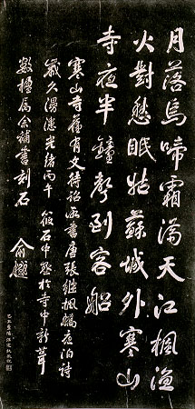

義助慰安婦
—— 李敖百件珍藏義賣藝術品（第29件）
品 名： B6. 俞樾「楓橋夜泊」拓片 預估價： 4 萬 成交價： 11 萬 說 明： 「月落烏啼霜滿天，江楓漁火對愁眠，姑蘇城外寒山寺，夜半鐘聲到客船。」我們念「唐詩三百首」，會看到一首七言絕句，就是張繼寫的「楓橋夜泊」，大家對這首詩都很熟悉。到了清朝有一位大學者俞樾寫了這首詩刻碑，不但這首詩變得有名，連所寫的這些字跟這個碑也跟著出了名。本件即是這個碑的拓本。
宋朝發現一個有趣的事：發現「夜半鐘聲到客船」是不成立的，因為寒山寺夜半三更不打鐘，所以不可能夜半在客船聽到鐘聲；可見詩人重意境卻與事實不符。
